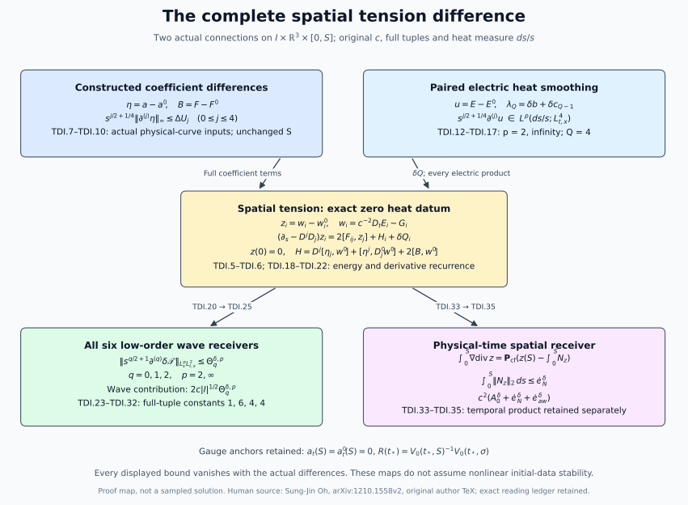

Spatial
tension differences and their wave estimates
This Unit 9 chapter derives the full spatial tension difference,
including the electric and temporal connection terms. A paired
heat-smoothing argument supplies its derivative coefficients. The
resulting estimates feed all six low-order wave bounds and an exact
signed heat-boundary operation used in physical-time reconstruction.
The physical domain is the original compact nondegenerate interval
,
with
,
spatial base
,
and heat interval
.
Retain coordinates
,
metric
,
original
,
and both derivative-regular
connection representatives. Set
(TDI.1)
The letter
denotes the spatial tension difference; it is not the temporal tension
.
Full ordered derivative, output and Hilbert–Schmidt matrix tuples are
used throughout. The curvature tuple contains all nine ordered spatial
pairs, including its three zero diagonal entries. The bracket bound is
.
The physical measure is
,
and the outer heat measure is
unless
is displayed.
Subtract NX.1–NX.4 and the physical Bianchi identity without changing
any index:
(TDI.2)
The heat-boundary zero statements follow from the actual vacuum
Yang–Mills and Gauss equations, not from a new boundary assumption. The
temporal connection difference remains in the Bianchi and tension
identities before the electric forcing is rewritten. In particular no
higher physical-time derivative is introduced as an estimate input.
For any ordered covariant word
,
the exact operator telescoping formula is
This also applies with temporal labels and
.
No covariant derivatives are commuted. For ordinary derivatives all
words below are expanded by subsets of their positions, with the
original relative order; products with three roles use ordered
three-part partitions. This convention retains coincident coordinate
indices and all empty subsets.
2. Subtract the
complete original tension forcing
The two original spatial equations are
(TDI.3)
The primed equation has every field and covariant derivative primed.
Before cancellation, the difference of the first two sums is
Exchanging
in the second line changes
to their negatives, and gives exactly the negative of the first line.
This is a bijection of all nine pairs, with the zero diagonals retained.
The cancellation also holds after every ordinary derivative because
differentiation commutes with this finite index bijection.
The temporal part of the difference, before Bianchi, is
Use TDI.2 in this exact expression. Define the original covariant
electric derivative difference
.
Then
(TDI.4)
Thus the coefficient
has been accounted for by the exact difference Bianchi identity; it was
not omitted. Expanding the last line leaves the two derivative products
and
,
and the three nested groups
,
,
and
,
all multiplied by
.
Expansion of
,
exhibits every quadratic and cubic difference term, including
.
The complete spatial tension difference equation is
(TDI.5)
Indeed, for each
,
. Expanding proves both expressions and all their nested terms. In
particular the quadratic term
remains within the displayed unprimed coefficient. The covariant energy
identity, before inequalities, is
(TDI.6)
Anti-Hermitian coefficients and the real Hilbert–Schmidt inner
product give the negative sign in the last term. Spatial cutoffs tend to
the identity using the regular positive-heat norms; the zero heat
endpoint is obtained after the integrable estimates below. No
physical-time boundary term is produced because no integration by parts
in physical time is used.
3.
Explicit coefficient differences at every order needed here
Use the original individual bounds from FC/HT,
(TDI.7)
Primes on individual coefficients denote the second connection’s
bounds. The last line follows by differentiating the exact original
curvature difference
,
with both spatial derivatives and both bracket tensors retained. It is
an explicit provider, not the difference of two upper bounds. We need
and
.
Here are complete finite instructions for these higher coefficient
differences on the original interval. They extend the all-order
estimates already proved in FI, while leaving that source unchanged. On
the auxiliary construction interval
of FI.24 use FI.8–FI.19’s actual arrays
,
FI.20’s all-order backward heat-gauge arrays
,
and FI.25’s physical-gauge arrays
,
with
.
For
,
put
(TDI.8)
Empty sums are zero. The first two lines are the full derivative
product of
with weights
.
The conjugation in
gives the triple sum. In the affine part, a zero derivative on
gives
;
otherwise both gauge derivatives have positive orders, leaving exactly
.
This proves the final line. At
its affine part is explicitly
.
These coefficients use FI’s original two physical difference inputs and
no higher derivative of a difference datum.
For
,
evaluate FI.28–FI.32 at
.
Write
,
bounded by the explicit starting jets FI.25–FI.27 and the exponential of
FI.31. Every coefficient is evaluated by FI.33–FI.35 in the original
target representative; an adequate finite list is the target
connection’s
jets through eleven and the target curvature
jets through eleven in
,
together with the reference-time backward gauge jets through ten. These
are individual FC/HT inputs. No undifferentiated connection
norm and no additional difference input is required. The index count is
exact: FI.31 at order eight uses
through eight, its gauge transform uses a gauge through ten, and
then uses the target electric field through eleven.
The full temporal difference identity needed only for this gauge
conversion is
.
Hence
(TDI.9)
Here
,
are exactly FI.28–FI.31, and all reference arrays use the original
reference radius and original
.
The spatial embedding is valid because
.
The differentiated ODE has a right skew-adjoint homogeneous coefficient,
so its propagator is unitary; integrating the remaining full Leibniz
terms proves the last two lines in increasing order. This derives all
five gauge jets, with the actual nonidentity anchor.
Set
and
,
.
Homogeneous Morrey–Sobolev applied to
proves the second entry, since the gradient and next gradient norms are
at most
and
.
Let
be the maximum of the two individual auxiliary-representative bounds
obtained from the identical local product and FI.35. Put
,
.
Then a full provider for TDI.7 is
(TDI.10)
This is the exact full derivative bound for
.
The original
is unchanged. If
,
the transition is the identity and TDI.8 already supplies the
answer.
For the separately requested second spatial coefficient, order six in
FI.32 suffices: replace
in TDI.9 by
.
Retaining the sharper integrations of the lower ODE jets gives
The right side in this last display is an alternative choice of the
upper provider
.
The coefficient three in each mixed affine term comes from the two
placements in
and the one placement in
.
This proves the required third-gauge receiver directly from the
displayed transition equation.
4.
Paired electric smoothing with constants that vanish with the
differences
Evaluate the individual ES/TW arrays on the two accepted FC bounds,
retaining
(TDI.11)
The corresponding primed arrays use the second connection’s complete
constants. These bound
and
in
.
The original endpoint wave data, full potential-wave forcing,
physical-time measure and every
remain inside
.
Let
be any proved upper bound for the actual lowest electric difference
.
A concrete current choice is ED.26 evaluated with FI’s coefficients, its
actual datum
,
and ED.16’s datum norm. ED.21 is a finite alternative in
;
ED.25b keeps the linear heat datum and displays all its coefficients.
The proved bound UD.21 is another
complete choice. This retains the actual heat datum, rather than
claiming a single-physical-time stability estimate.
Fix a target derivative order
,
and set
.
We will use
for spatial tension and
for the additional fixed-time receiver. On the original interval
,
define
(TDI.12)
Define
by the entire displayed formula for
,
replacing
in the first two sums by
,
by
,
and each
by
.
Put
(TDI.13)
This is a finite linear expression in the coefficient differences.
Every coefficient depends only on the individual fields and
.
The shared maxima in TDI.12 bound both operators. For example,
Here is a proof of the paired estimate, including the degenerate case
.
Work either in
,
or at each fixed physical time in
.
Let
,
,
and form only sums of norms
,
,
with primed versions. No electric field or metric is changed. Expanding
ED.6 and differentiating every factor gives its self-operator ES.7, and
the five coefficient-difference groups
,
,
,
,
.
Consequently the weighted forcing sum is at most
The primed equation has bound
.
Multiply only that scalar inequality by
and add. Since
for
,
the sums
,
have total forcing at most
.
No division by
occurs. The original scalar heat kernel has mass one and full gradient
norm
,
,
in either space
.
On a slab of length
,
the two Duhamel equations, triangle and the four exact integrals
therefore give the ES.17 absorption with coefficients
.
Set
(TDI.14)
Each of the two absorbed contributions is at most
.
Propagate order zero on the first
slabs and gain one derivative on the last
;
each gain costs exactly the upper factor
.
This proves TDI.14. Regularity makes all intermediate slab norms finite,
and Duhamel is justified on positive closed heat intervals by the
original heat-kernel strong continuity. A zero
simply removes every primed norm from the scalar sums.
For
,
define
(TDI.15)
Indeed the substitution
is only a scalar integration substitution; it changes the upper limit to
,
whose norm is bounded by the original
norm, and gives precisely
.
The physical norm is taken first throughout.
The requested fixed-time version, with
,
is
,
,
with
from ED.11 and
.
Its entirely linear upper input is
This is ED.25b’s proved energy bound, with the actual
supplied by FI.42 when desired. Thus each fixed-time derivative slope is
explicit in the original two coefficient differences and the actual
electric heat datum; it is not inferred by subtracting two individual
estimates.
The covariant derivative difference in TDI.4 satisfies, for
,
(TDI.16)
This follows by differentiating all three terms of
.
The product weights leave
,
bounded by
,
without changing any field.
For two pairs of nonnegative heat-norm bounds
,
,
define
,
,
.
Superscripts here label heat exponents. The full electric forcing
difference has the bounds
(TDI.17)
For each subset, physical Hölder pairs
with
.
The original two contractions cost
.
Their two heat weights total
. Heat Hölder proves each entry of
,
so every minimum is a minimum of two proved bounds for the same product.
This supplies all differentiated electric forcing from the lowest actual
electric difference and the constructed coefficients.
5.
Zero-data spatial tension energy and every finite derivative
Let
and
be precisely the individual hatted TW.8–TW.13 coefficients, now with the
hats suppressed only in their names. Thus
,
for
,
and
.
Their finite evaluation uses the original individual
,
TW.3, TW.8, and TW.11; all are already supplied by the individual FC/HT
estimates. Put
.
The covariant divergence form in TDI.5 gives the explicit input
bounds
(TDI.18)
For the flux and gradient remainder use
and heat Cauchy–Schwarz. The curvature remainder integrates
to
.
In the ordinary alternative, the drift pairs with
,
the divergence costs
,
and the two nested coefficients integrate
to
.
The electric term uses exactly
.
This proves every line.
Multiplying TDI.6 by
,
keeping the derivative of that factor, and using Young only on the flux
gives
The initial term is zero. For
,
integration gives
,
hence
.
The same inequality controls the full weighted gradient integral by the
square of this root. Applying instead the original forcing form and the
regularized norm gives
,
and its energy integral gives the corresponding gradient bound
.
Therefore define
(TDI.19)
Both alternatives are independently proved; no numerical ordering
between them is asserted. The flux alternative avoids
at the energy start. Norm division is justified using
and then
.
All zero cases are included.
Let
.
Expand TDI.5 completely. Its terms are the four ordinary self-operator
groups from TW.9 on
,
the five original groups in
,
and
.
The full ordered product rule proves
(TDI.20)
The first-order products use the known
and
.
The divergence and curvature products use
and
.
The nested products use
.
All terms have exactly the original forcing weight
.
This proves
.
The original differentiated ordinary energy calculation is
(TDI.21)
Pair the equation with
,
integrate over the original physical variables, and use Young with
coefficients
.
Parseval for the full tuples gives
.
The lower weighted endpoint vanishes by regularity and
.
Taking separately the endpoint supremum and final integral proves
TDI.20. Every coefficient on its right has already been obtained at the
preceding order. After that step,
(TDI.22)
The same proof gives all finite orders if the finite arrays are
extended; the stated orders use at most
and fourth electric smoothing. The actual upper endpoint
is included in every supremum.
6.
Subtract the full receiving operator before estimating it
Retain TW.1’s complete spatial contribution
. Let
,
and retain the exact maps
(TDI.23)
The three terms in
are respectively
,
,
.
The two terms in
are
and
.
Thus all terms of the original covariant operator remain. The identity
for the nested difference follows by polarization of the quadratic
operator
,
and is exact even though
need not be symmetric.
We reprove the useful constants to fix their applicability to
differences. The Fourier symbol of
is
,
so the complementary orthogonal projection identity gives
. For a spatial matrix
,
the map
has eigenvalues
on its trace, symmetric trace-zero and antisymmetric parts. These parts
are orthogonal even with matrix-valued entries. The bracket contraction
therefore costs
.
The map
has squared norm
,
so its bracket costs four.
Finally write
,
,
and
.
Anti-Hermitian coefficients give
and
.
Both positive operators lie below
,
so their difference has operator norm at most
.
For fixed
,
its quadratic form is a real quadratic form in
bounded in absolute value by
;
diagonalizing its representing real symmetric matrix bounds the
polarized form by
.
The polarized operator is self-adjoint, hence
(TDI.24)
These proofs apply to every ordinary derivative of
,
which remains anti-Hermitian. In the full derivative sum for
,
exchange its first two ordered subsets and average; the same sum then
uses
with identical multiplicities. For the other two nested groups in TDI.23
the polarization has already been performed pointwise. Thus no
coefficient eight is needed for these paired nested groups, and none of
their original terms is dropped.
For
let
,
,
with primed counterparts, and let
.
The complete difference bound is
(TDI.25)
Every derivative placement in TDI.23 is retained by the displayed
binomial and multinomial sums. The weight calculations are exactly those
in TDI.20, and the linear term is the full second-derivative tuple with
coefficient one. For the heat-square case its norm is
;
for the heat supremum it is
.
This proves both heat exponents without interchanging the physical and
heat norms.
7. Fully evaluated
orders zero, one and two
To display all cubic derivative coefficients explicitly define
(TDI.26)
They evaluate the complete two coefficient roles, including both
orders of distinct derivative placements. Thus for each
,
with the explicit choices of
above,
(TDI.27)
At order one,
(TDI.28)
At order two,
(TDI.29)
All required tension constants are evaluated, in this order, by
(TDI.30)
For an entirely arithmetic evaluation of TDI.20 at
,
every bilinear sum is respectively
,
,
,
.
Its cubic sum is this same bilinear polynomial applied to
plus that applied to
,
with the fully expanded arrays TDI.26. The electric sum TDI.17 at these
orders has the same coefficients
,
,
,
applied to its displayed two products. Thus TDI.11–TDI.20 and
TDI.26–TDI.30 form a finite calculation with no future derivative input
or unexpanded combinatorial rule at the required orders.
8. Exact insertion
into the paired FC equations
Subtracting the two full FC.6 equations, with the above original
variables, gives
(TDI.31)
Every repeated spatial label here is summed over
.
This display retains all spatial, temporal, electric and nested gauge
terms, and puts
only inside
,
where it belongs. TDI.23 is the exact subtraction of its complete
covariant tension part. The other terms are the separate paired FC
receiving calculations; this note neither removes them nor claims their
total closure.
Define
:
it is the sum of every spatial, electric, temporal and nested term on
the right of TDI.31 except its final
.
Define its actual regular forcing norm
.
The original full-tuple wave inequality HW.31 yields the concrete
insertion
(TDI.32)
Here
is the actual wave norm of
,
not the difference of two wave-norm values. Parseval identifies the
integer Fourier derivative with the full ordered spatial tuple. The
factor two retains the wave-energy forcing contribution and the forcing
already present in the original
norm. The initial energy is the actual paired initial energy and remains
explicit. No estimate for it by a different topology is asserted.
Equation TDI.32 states precisely the contribution established here:
to each of the six equations, or
to their sum. It does not insert an extra factor six into a common
principal coefficient.
9.
The integrated heat receiver for physical-time reconstruction
The zero-order ordinary tension equation also has an integrable
forcing, with the original measure
.
Every term in its complete expansion gives
(TDI.33)
For the gradient term use
;
for the divergence, nested and curvature terms use respectively the
exact integrals
.
The corresponding primed terms give the other displayed summands. Thus
no absolute integral of
has been invoked.
Define the orthogonal Fourier projection
on full spatial vectors. Integration of
,
with its actual zero lower heat value, gives the exact distributional
identity
(TDI.34)
For precision, first integrate over
.
Apply the bounded projection to
,
and let
.
The right side converges strongly in
by TDI.19, TDI.33 and
;
this proves the strong improper integral on the left, even if its
absolute norm integral is not supplied by the weighted second-derivative
estimate.
The other spatial product has the complete bound
(TDI.35)
Indeed the derivative hitting a connection contributes bracket
constant two and integral
;
the derivative hitting a tension contributes bracket constant two and
heat Cauchy–Schwarz factor
.
The complete tensor contractions are bounded by their full tuples. From
TDI.2 and
,
the spatial part of
is therefore
, with norm at most
.
Its remaining exact temporal term is
.
This identifies the precise receiver for the separate temporal-tension
calculation, retaining its sign and original endpoints. It does not
replace that term by an unproved bound.
10. Zero
cases, quantitative dependence and source use
All numerical operations above are finite on the prescribed original
regular interval. No step divides by a curvature size, an electric norm,
a coefficient difference or
.
When all actual differences vanish,
vanish; TDI.13–TDI.17 then gives all electric difference coefficients
zero, TDI.18–TDI.20 gives all spatial-tension difference coefficients
zero, and TDI.25 gives
.
More quantitatively, on each bounded set of the explicitly listed
individual inputs, all these quantities have a degree-one majorant in
the tuple
,
with the displayed coefficients retaining every factor of
and their physical units. The paired smoothing constants depend only on
individual coefficients; its
is linear in the difference coefficients. The energy root is bounded by
,
and each later square root by the sum of its two nonnegative entries.
Induction proves the stated degree-one majorant. This is a proved
consequence of the full nonlinear difference equations, including their
quadratic difference terms, which remain inside the actual bounded
unprimed coefficients.
The input
is FI.3’s difference of the actual physical curves over
;
is evaluated from an actual ED datum or the complete UD.21 bound. The
full nonlinear initial-data estimate also requires the remaining paired
wave terms and physical gauge reconstruction. This proof supplies its
complete spatial-tension operator and forcing, without using that
estimate as a premise.
11.
Worked example: commuting fields and a zero tension difference
Let both connections take values in the same fixed one-dimensional
abelian matrix algebra. Every bracket in TDI.3–TDI.6 vanishes. The
actual lower heat datum remains
.
Consequently
At each physical time, pairing with
on a positive heat interval and passing to zero gives
.
Thus
.
The electric expression
also vanishes because all its brackets vanish. TDI.23 gives
,
and TDI.34 gives zero for the projected heat integral. Two distinct
electromagnetic waves can therefore have zero tension difference: the
tension measures a field-equation defect, and is not the potential or
electric field itself. The other terms and initial data in the full wave
equation remain part of its comparison.

The actual coefficient and electric
differences feed spatial tension, all six wave bounds, and the signed
heat-boundary operation.
Figure: TDI.1–TDI.35, with all derivative tuples and the original
gauge anchors. It depicts proved operations, not sampled solutions.Reproducible
figure source.
12. Exercises with full
solutions
Exercise
1. Keep the time-connection difference in Bianchi
Derive TDI.2’s Bianchi difference directly from the two
connections.
Solution. The original identity is
.
Since
and
,
exact subtraction gives
The term
is required even when the electric difference is zero. Substituting this
entire expression into the temporal part of the tension forcing produces
,
with
,
as in TDI.3.
Exercise 2.
Verify the covariant flux decomposition
Expand
and show that it contains all four connection-difference terms in
.
Solution. The product rule gives
The last two brackets equal
.
Indeed their difference is
by Jacobi, and this is
for each
.
Summing over all three
and adding
gives exactly TDI.5–TDI.6. No derivative of the coefficient is dropped;
it is part of the displayed divergence.
Exercise 3. Derive
the tensor constant six
Prove the bound for
in TDI.24 using its full spatial matrix, including the trace.
Solution. Decompose a real or complex
-by-
spatial matrix orthogonally into its scalar, symmetric trace-free and
antisymmetric parts. The map
acts on these three spaces by
,
respectively. Thus
in the full Frobenius tuple. For each output
,
the bracket estimate and Cauchy–Schwarz give
Squaring and summing over
proves
.
The factor six is the bracket factor two times the full tensor operator
norm three; it is not a count of selected components.
Exercise
4. Recover the electric coefficient and its heat power
Derive the coefficient
in TDI.17 and its forcing weight at derivative order
.
Solution. In one product of
,
the two contractions have bracket costs two and four. Their sum,
multiplied by
,
is
.
The primed electric factor with
has the same cost. Assign
of the
ordered derivatives to the first factor. There are
placements, and the full heat powers satisfy
Physical Hölder uses
.
Outer heat Hölder uses
,
either
ordering, and
.
These give precisely the three product maps in TDI.16 and all summands
in TDI.17.
Exercise
5. Solve the energy inequality without dividing by a norm
For
,
solve
and prove a degree-one upper majorant of the solution.
Solution. Completing the square gives
.
Hence
.
Conversely this nonnegative root satisfies
,
so it is the exact upper endpoint. Since
,
it is at most
.
All steps remain valid at
,
,
and at their common zero. With
,
,
multiplication by the individual factor
gives TDI.19’s energy bound and its degree-one majorant.
Exercise 6.
Expand the second-order nested coefficients
Compute
and
from the full ordered product rule.
Solution. Two derivatives split between two factors
in the three ways
,
with multiplicities
.
Therefore
For the third factor carrying the tension, the complete order-two
coefficient is
Expanding each
recovers all ordered triple placements in TDI.20. Symmetric polarization
changes neither these multiplicities nor the mixed primed and unprimed
coefficients.
Exercise 7.
Explain the factor two in the wave receiver
Recover the prefactor in TDI.32 from the definition of the full wave
norm.
Solution. For
,
the energy estimate gives
The full
norm adds another
.
Its sum therefore has the coefficient
.
Insert
,
multiply by the original weight
,
and take either outer heat norm. Triangle gives TDI.32. Summing six such
estimates sums their six forcing bounds; it does not multiply each
original operator coefficient by an additional six.
Exercise
8. Prove the weighted derivative recurrence
Derive TDI.21 from the ordinary heat equation and explain its zero
lower endpoint.
Solution. Apply the complete ordered
-derivative
tuple to
,
pair with
,
and integrate spatially and over the unchanged physical interval.
Product differentiation gives
Parseval gives the exact full-tuple Hessian norm on the left. The
last pairing is at most
Move the latter term to the left and integrate from zero to
.
For the regular pair,
and the weighted lower energy vanishes. This gives TDI.21 with every
term retained. Its first integral is bounded by
;
the forcing integral by
.
Taking the two output bounds separately gives exactly the square root in
TDI.20, whose inputs were obtained at earlier derivative orders.